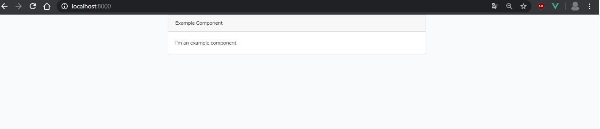
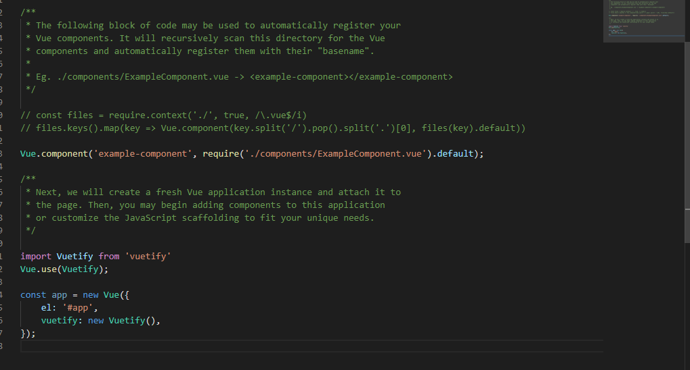

Esta guía tiene el objetivo de indicar los pasos necesarios para una correcta instalacion de las librerias que usaremos en el desarrollo, los detalles como, qué es un componente en VUE, que es Vuetify o por qué usaremos laravel 6 en vez de la v7 no estaran detallas aquí porque no es el objetivo. Pero aun que no entienda, si sigue al pie de la letra la guía, todo funcionara correctamente. Además para hacer las instalaciones necesarias necesitaran tener instalado como mínimo nodeJS y composer.
1.1- Instala la última versión de Laravel mediante composer. En este caso, mediante el CMD nos vamos a la donde queremos que se guarde el nuevo proyecto y escribimos:
composer create-project --prefer-dist laravel/laravel nombre-proyecto "6.*"1.2- Precionamos enter y esperamos que descarguen las librerias de laravel
Nota: El asterisco (*) Indica que se instalara la ultima version de laravel 6. Si queremos instalar una en especifico debemos escribir por ejemplo 6.1.
La documentación oficial de instalación esta AQUÍ

1.3.- Una vez finalizada la descarga, verificamos si laravel se descargo correctamente. Desde el CMD nos dirigimos a la carpeta donde se instalo laravel e iniciamos el servidor con el siguiente comando:
php artisan serveUna vez montado el servidor, nos vamos al navegador y escribimos http://localhost:8000 para ver el nuevo proyecto laravel.

Si nos carga la siguiente pagina significa que todo se descargo correctamente.
Desde la versión de Laravel 6 ya no se incluye el pre-procesador ni framework Javascript y CSS por defecto. Toda esta funcionalidad fue movida para el frontend (scaffolding) que se incluía de forma predeterminada (Bootstrap y Vue) ha sido extraída a un nuevo paquete oficial llamado laravel/ui.
2.1.- Para instalar dicho paquete nos vamos al CMD y luego a nos direccionamos a la carpeta del proyecto y escribimos:
composer require laravel/ui:^1.0 --devCuando finalice la instalación podrás agregar la configuración básica de una de las siguientes 3 opciones:
php artisan ui bootstrap
php artisan ui vue
php artisan ui reactEn nuestro caso ejecutamos el comando correspondiente a Vue.
2.2.- Una vez descargados los paquetes debemos instalarlos con el siguiente comando:
npm install2.3.- Instaladas las nuevas dependencias nos al proyecto, para verificar que todo resulto bien, nos vamos a la carpeta del proyecto \resources\views, archivo welcome.blade.php y borramos todo su contenido y agregamos el siguiente:
<!DOCTYPE html>
<html lang="{{ str_replace('_', '-', app()->getLocale()) }}">
<head>
<meta charset="utf-8">
<meta name="viewport" content="width=device-width, initial-scale=1">
<title>Laravel</title>
<!-- Fonts -->
<link href="https://fonts.googleapis.com/css?family=Nunito:200,600" rel="stylesheet">
<!-- Styles -->
<link href="{{ mix('css/app.css') }}" rel="stylesheet">
</head>
<body>
<div id="app">
<example-component></example-component>
</div>
<script src="{{ mix('js/app.js') }}"></script>
</body>
</html>
Como acabamos de hacer cambios que involucran a VUE debemos compilar nuestro codigo, para ello ejecutamos en el CMD, estando en el directorio raiz del proyecto el siguiente comando.
npm run devUna vez compilado, nos vamos al navegador, dirección http://localhost:8000/ y si vemos lo siguiente tendremos instalado correctamente VUE en nuestro proyecto de laravel.
Si queremos que cada vez que hagamos cambios en VUE se compile de forma automatica, ejecutamos el siguiente comando en el CMD:
npm run watchLa instalación de Vuetity en laravel es muy sencilla, solo debemos:
3.1- Desde la raíz del proyecto ejecuta la instalación mediante el siguiente comando:
npm install vuetify3.2.- Debemos editar app.js de la carpeta resources/js/app.js para iniciar Vuetify:
import Vuetify from 'vuetify'
Vue.use(Vuetify);Y añade la instancia de Vuetify como parámetro en la de Vue:
const app = new Vue({
el: '#app',
vuetify: new Vuetify(),
});Finalmente, con las modiciaciones el archivo app.js debe quedar así:
3.3.- Añade 2 importaciones al fichero resources/sass/app.scss, una con la fuente de los iconos de material design y otra con el css correspondiente a la biblioteca vuetify.
// Fonts
@import url('https://cdn.jsdelivr.net/npm/@mdi/font@4.x/css/materialdesignicons.min.css');
// Vuetify
@import '~vuetify/dist/vuetify.min.css';3.4.- Reemplaza el contenido del componente resources/js/components/ExampleComponent.vue por el indicado en este enlace correspondiente al layout de ejemplo "google-contacts" de la documentación oficial de vuetify. El cual puedes ver AQUÍ
Compilamos el nuevo codigo con el comando npm run dev.
Una vez hecho eso, teniendo montado el servidor, nos vamos al navegador, escribimos http://localhost:8000/ y nos debe aparecer lo siguiente.